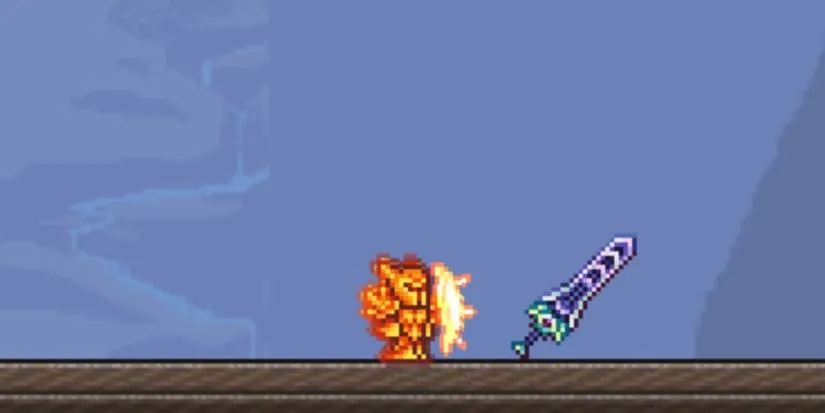
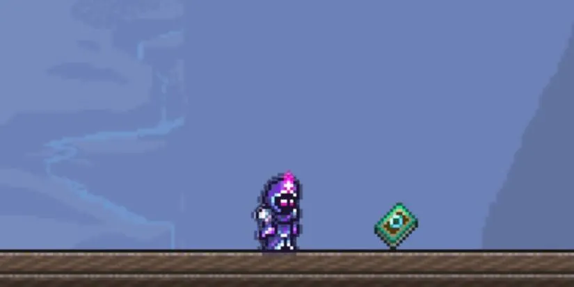
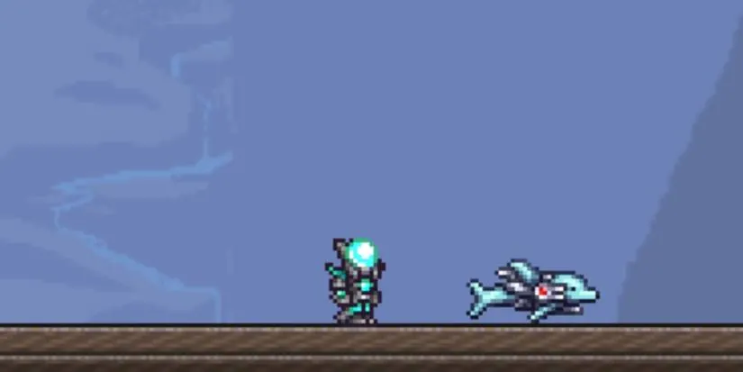
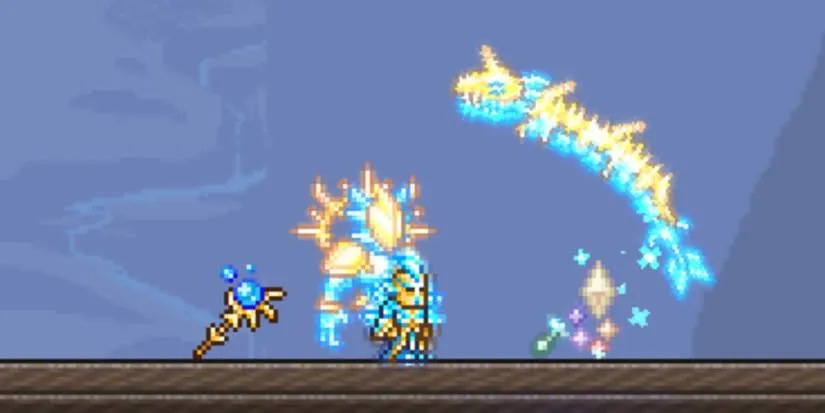

Les rôles
Dans Terraria, il n'existe pas de classes imposées. Votre rôle dépend entièrement de votre équipement, de vos armes et de votre style de jeu. Chaque rôle possède ses forces, ses faiblesses et une manière unique d'aborder les combats.

Mêlée
Le rôle Mêlée est basé sur la résistance, les dégâts rapprochés et la survie. Il utilise principalement des épées, yoyos et armes lourdes.
- Très grande défense
- Idéal pour encaisser les dégâts
- Parfait pour les débutants
- Excellent en combat direct contre les boss
Le Mêlée est souvent en première ligne, certaine armure le rend plus vulnérable d'être cibler par les ennemies ce qui permet au autre rôle de ne pas être attaqué et peut survivre là où les autres classes auraient du mal.

Mage
Le Mage utilise le mana pour lancer des sorts puissants à distance. Il inflige d'énormes dégâts, mais reste fragile sans protection.
- Dégâts magiques élevés
- Large variété de sorts
- Gestion importante de la mana
- Faible défense
Le Mage excelle contre les groupes d'ennemis et les boss à distance, mais demande une bonne préparation.

Distance
La classe Distance se concentre sur les armes à projectiles : arcs, fusils, lance-grenades et armes technologiques.
- Dégâts constants à longue portée
- Grande mobilité
- Dépend fortement des munitions
- Très efficace en boss fight
Le Distance est idéal pour attaquer sans s'exposer, tout en restant très polyvalent.

Invocation
Le rôle Invocation repose sur l'utilisation de sbires et de sentinelles qui combattent automatiquement.
- Combat indirect
- Très peu de défense
- Gameplay stratégique
- Synergie avec les autres classes
Le Summoner est puissant mais exigeant, recommandé aux joueurs expérimentés.